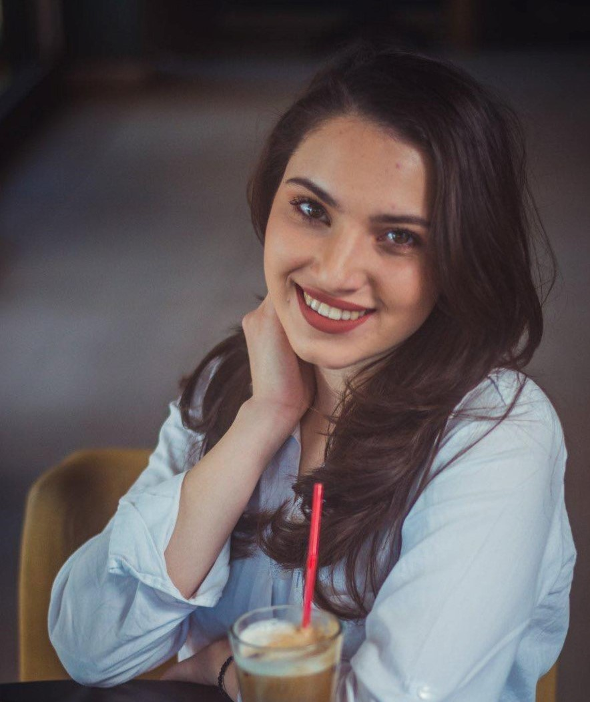

A
nna Zaharijeva
I got the title of graduate engineer in information sciences and computer engineering! I want to thank my family, who have always been by my side emotionally and financially, and my colleagues and friends, who selflessly shared their knowledge and time. A man is successful only when those around him share the same desire for him to succeed.